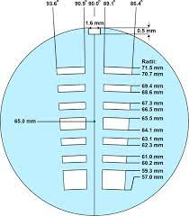
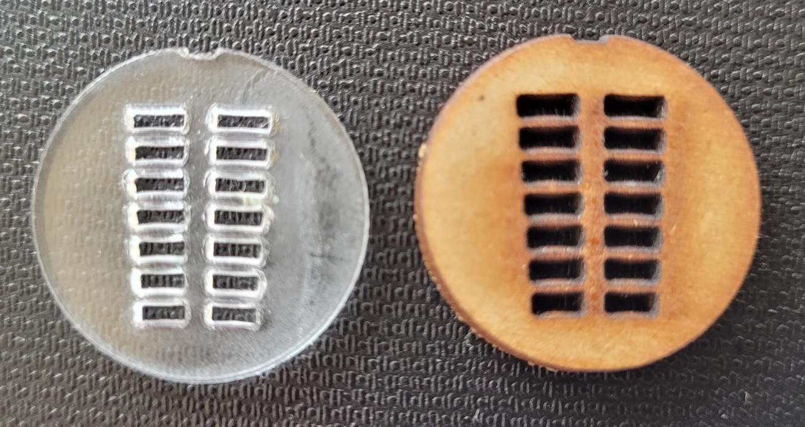

Calibration Disk
For more information on this page, see:
To address the issues related to AUC instrument hardware, a calibration disk has been developed as well as experimental procedures and UltraScan modules to carefully measure specific hardware effects and correct them during fitting by calibrations of the chromatic aberration and rotor stretch.
Design Features
The calibration disk has a geometry with two sector-shaped channels, each divided into seven open sectors for each channel, and six ribs. Each sector is 3.7-degrees wide, wider than a standard 2-channel epon-charcoal centerpiece, which is only 2.5-degrees wide, and is offset by 0.9-degrees from the centre-line. A guide note (1.6 mm x 0.5 mm) is included to ensure proper alignment in the cell housing.

The following requirements were considered when designing this disk.
-
We want to maximize the number of edges, so that we could allow for a greater number of position replicates, thus allowing for improved statistics of a rotor stretch protocol. The openings were designed to be at least 500 um wide to prevent overlaps in the inner and outer edge position recordings. The ribs were at least 100 um wide, to ensure sufficient stability when the rotor is spinning at high speeds.
-
The Optima AUC uses a photo-multiplier tube to detect light passing through the sample. The instrument adjusts the photo-multiplier voltage based on the opaqueness of the sample. The UV detector performs this check at 65.0 mm in the center of the reference channel. It is important to ensure that the light path is never blocked at this position; if it were, the photo-multiplier voltage would be set to the maximum gain, flooding the detector with too much light in the open sections. Therefore, we created the 4th open section (center hole) to be positioned in such a way that there will be an opening for the light intensity calibration, regardless of any rotor stretch. Thus, we can assume that the photo-multiplier voltage will always be set to an appropriate amount, irrespective of wavelength or rotor stretch.
-
At each rotor speed, a delay-time calibration procedure is performed to determine the precise angle of the rotor, and to find the sample cell channels. The instrument is programmed to use to find the counterbalance's inner calibration hole, and uses them to obtain a precise angle for the calibration hole. To replicate this feature, the innermost open sector is longer, and position in the same position as the calibration holes of the counterbalance. This permits the calibration disk to be used for delay calibration purposes as well.
-
The shape of the edges follow the circle of their radii, and the sectors are wider than standard centerpieces. This minimizes any error from lamp flash timing, while improving radial recording accuracy.
-
Both sectors are mirror images of each other. Scanning in intensity mode allows each sector to be scanned as a separate image, and the calibration results from both sectors can be compared for agreement. Any disagreement between the two sector's edge positions indicate an alignment issue with the disk, and thus it can be used as a guide to correct the alignment notch of either the cell housing or the rotor.
-
The edge positions of our design has been verified by scanning the disk on a high-resolution flatbed scanner.
-
Using correct spacer rings, our disk can be positioned precisely in the focus position of the light path for optimal imaging accuracy of the edge positions. Specifically, the calibration disk is installed between two windows, and positioned in at 2/3 of the optical plane of the 1.2 cm AUC cell housing.
Manufacturing

Laser cutting, 3D printing, and CNC machining were all tested for the manufacturing of the disk. 3D printing was considered because it was previously used for centerpieces,1 but was too imprecise and lacked sufficient rigidity at 0.5 mm thickness for our needs (see figure). Additionally, thicker material produced measurable issues with shading on one side of the edge, suggesting that the incident beam is not perfectly perpendicular to the focus plane.
In the end, we found that CNC machining produced the most reproducible and accurate results. A Sherline 3 axis Bench Top CNC Mill with a tolerance of +- 0.0005 cm, featuring a solid carbide slotting end mill, were used to produce the calibration disks from 0.5 mm brass shim stock. All disks were manufactured by Geoff Minors of Technical Services of the University of Lethbridge.The predicted positions of the edges were verified using a flatbed scanner with 3200 DPI optical resolution (~8 \(\mu\)m), by determining the actual edge positions using standard Euclidean geometry, while assuming the center of the disk to be located at 65 mm.
-
Desai, A., Kyrnitsky, J., Pohida, T. J., Zhao, H., Schuck, P. (2016). 3D-Printing for Analytical Ultracentrifugation. Plose One, 11(8).↩